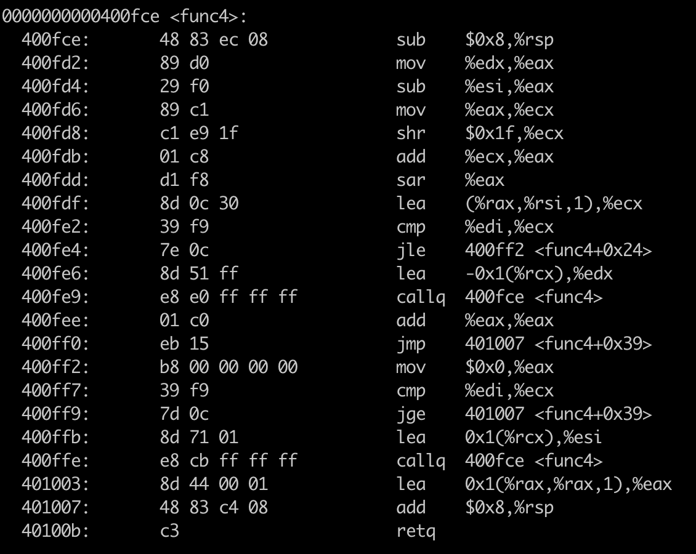
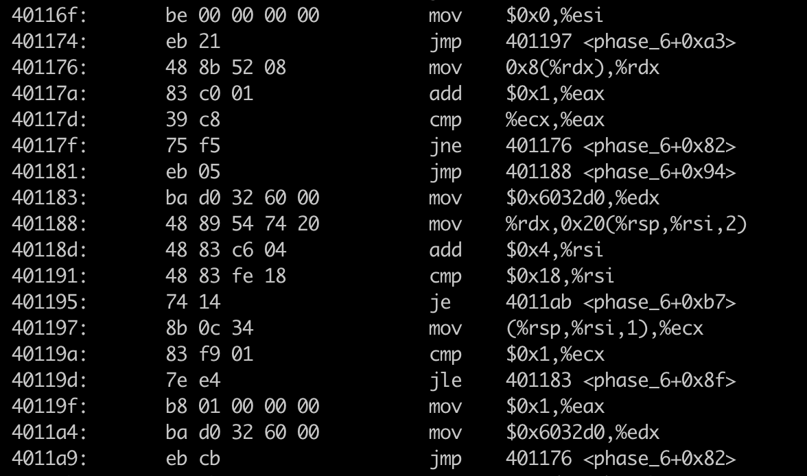

As we don't have bomb source code, so we need to use tools like gdb, coredump to understand what happens inner bomb.
Use objdump -t bomb|grep phase to get to know bomb function calls
Use objdump -d bomb to get to know bomb assemble code.

The above code compare if two strings equal. The first string is the input string, and from mov $0x402400, %esi, we can know that the second string is stored in mem location 0x402400
So we can use gdb to run the program to check what is stored in 0x402400.
break pahse_1 to set the break point.
nexti or stepi to execute next instruction
x/s 0x402400 to examine the string in this memory
And the string is Border relations with Canada have never been better.


From the above assemble code, I found there is a function read_six_number, so I infered that read_six_number is to scanf number from input, so we should input six number.
Use gdb to follow the instruction to get to know what causes bomb. And also use x/w $rbx or p $eax to examine value in register.
And I found that the following code matters
400f17: 8b 43 fc mov -0x4(%rbx),%eax
400f1a: 01 c0 add %eax,%eax
400f1c: 39 03 cmp %eax,(%rbx)
400f1e: 74 05 je 400f25 <phase_2+0x29>
400f20: e8 15 05 00 00 callq 40143a <explode_bomb>
-0x4(%rbx) is current number, while (%rbx) is the next number, the bomb not occurs only when 2 * current number equals to next number
so we can get the string 1 2 4 8 16 32
Use gdb to execute the code line by line.
The key code is as following
400f60: 83 f8 01 cmp $0x1,%eax
400f63: 7f 05 jg 400f6a <phase_3+0x27>
The above code keeps going when %eax is bigger than 1, otherwise bomb.
400fb9: b8 37 01 00 00 mov $0x137,%eax
400fbe: 3b 44 24 0c cmp 0xc(%rsp),%eax
400fc2: 74 05 je 400fc9 <phase_3+0x86>
The above code return only when 0xc(%rsp) equals to 0x137
So the answer is 2 707

Use w/s 0x4025cf to print the string, we found that the no. input parameters is 2.
From 40104d: 85 c0 test %eax,%eax, we know that the func4 return value has to be 0
401051: 83 7c 24 0c 00 cmpl $0x0,0xc(%rsp)
401056: 74 05 je 40105d <phase_4+0x51>
From the above code, we know that the second parameters has to be 0
So the key is to dive into func4

The input parameters are
40103a: ba 0e 00 00 00 mov $0xe,%edx
40103f: be 00 00 00 00 mov $0x0,%esi
401044: 8b 7c 24 08 mov 0x8(%rsp),%edi
so edx = 14, esi = 0, edi = first parameter of input
Let's reverse the code of func4 using C.
int func4(int edi, int esi, int edx) {
int ecx = (edx - esi) >> 31;
int eax = (ecx + (edx - esi)) >> 1;
ecx = eax + esi;
if(ecx <= edi ) {
if (ecx >= edi) {
return 0;
}
eax = func4(edi, ecx + 1, edx);
return 2 * eax + 1;
}else {
//ecx > edi
edx = ecx - 1;
eax = func4(edi, esi, edx);
return 2 * eax;
}
}
Let's write program to check where func4 returning 0
int main(void){
for(int i = 0; i <= 0xe; i++){
if(func4(i, 0, 0xe) == 0){
printf("%d\n",i) ;
return 0;
}
}
return 0;
}
And we found only 0 meets. And the final answer is 0 0

40107f: 83 f8 06 cmp $0x6,%eax tells us that the input length has to be 6.
The key is in the following code, where loops to convert inptut string to another string with mapping table.
40108b: 0f b6 0c 03 movzbl (%rbx,%rax,1),%ecx
40108f: 88 0c 24 mov %cl,(%rsp)
401092: 48 8b 14 24 mov (%rsp),%rdx
401096: 83 e2 0f and $0xf,%edx
401099: 0f b6 92 b0 24 40 00 movzbl 0x4024b0(%rdx),%edx
4010a0: 88 54 04 10 mov %dl,0x10(%rsp,%rax,1)
4010a4: 48 83 c0 01 add $0x1,%rax
4010a8: 48 83 f8 06 cmp $0x6,%rax
4010ac: 75 dd jne 40108b <phase_5+0x29>
Use x/s 0x4024b0 to print the string maduiersnfotvbyl, which is the mapping table.
The mapping rule is to abtain the index by and $0xf,%edx
Use x/s 0x40245e to print the target string flyers
so f -> 0x9 + 0x60 = 69 -> i
l -> 0xf + 0x60 = 0x6f -> o
y -> 0xe + 0x60 = 0x6e -> n
e -> 0x5 + 0x60 = 0x65 -> e
r -> 0x6 + 0x60 = 0x66 -> f
s -> 0x7 + 0x60 = 0x67 -> g
so the final answer is ionefg
This is the harderst one in this lab.

The first step is to check each value is small or equal to 6 and also every two input numbers should be different.
There are two loops.
The out loop jump is in 401151: eb c1 jmp 401114 <phase_6+0x20>
The inner loop jump is in 40114b: 7e e8 jle 401135 <phase_6+0x41>
401145: 83 c3 01 add $0x1,%ebx, %ebx is the inner loop variable , %rbp stores the current value
40113b: 39 45 00 cmp %eax,0x0(%rbp) compares current value with the other numbers after it , keep going only they all are different.
40114d: 49 83 c5 04 add $0x4,%r13 , %r13 is the outer loop variable, it is a address pointing to a input number.
40111e: 83 f8 05 cmp $0x5,%eax, this line tells that each input number has to be smaller or equal to 6.
The second step is to make every input number x to be 7 - x

The code above is also a loop. Loop variable is %rax, which points the address of an input number.
40115b: b9 07 00 00 00 mov $0x7,%ecx is to make an input number x = 7 - x
The third step becomes difficult.

401183: ba d0 32 60 00 mov $0x6032d0,%edx, we found 0x6032d0 frequently occurs, which seems like an address. So let's check what is inside 0x6032d0.

The above node is a linked node, so we can infer that it is a linked list. And we can also infer the linked list structure from its data.
struct LinkedList {
int index;
int value;
struct LinkedList* next;
}
The following code is the key to understand in this part.
401176: 48 8b 52 08 mov 0x8(%rdx),%rdx , is the code like cur = cur -> next
40117d: 39 c8 cmp %ecx,%eax, %eax is the current input number.
So the above code is to find the linked node with index equal to an input number.
For example, if input numbers are 3 2 1 4 5 6, and the linked node is put into stack with the sequences of node3, node2, node1, node4, node5, node6.
The following code is the fourth step to determine the final answer.
The key code is in 4011e5: 39 03 cmp %eax,(%rbx), where (%brx) is the current node value, and %eax is its next node value, and the current node value has to be bigger or equal to next node value.
So we go back to check the node value.
node3 > node4 > node5 >node6 > node1 > node2
And we also have another rule x = 7 -x
so we get the final answer 4 3 2 1 6 5
jmp and also try to find the registers used for loop.x/w, x/s to check the value in that address.Reference